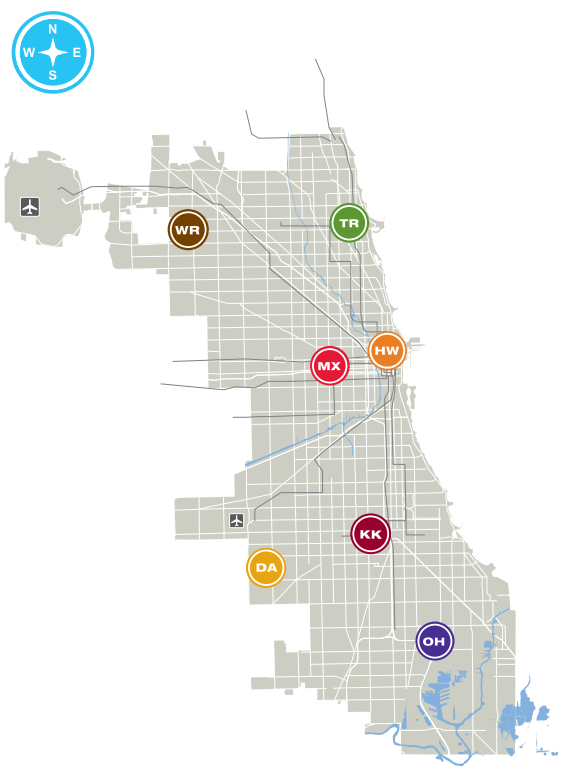

Section 8.3 Trees in Action
Imagine your task is to create a railway between all the City Colleges of Chicago (CCC) campus locations. The contract requests that you use minimal track material to save construction costs. For simplicity’s sake, assume each railway is a straight line between campuses.
Subsection 8.3.1 Railway Problem
Let’s make a plan to solve our railway construction optimization problem.
- Find the latitude and longitude of each CCC campus location.
- Use the Haversine formula to calculate the distances between the locations. The Haversine formula requires latitude and longitude for inputs and computes the shortest path between two points on a sphere.
- Make a graph of the CCC campuses. Each location is a node. Each railway path is an edge. Each railway path is the shortest path between locations. The weight of the edges represents the distance between locations.
- Find the minimum spanning tree (MST) of the CCC graph.
Subsection 8.3.2 Location Distances
| Name | (Latitude, Longitude) |
|---|---|
| Harold Washington College | (41.88609733324964, -87.62682604591349) |
| Harry Truman College | (41.9646769664519, -87.65901943241516) |
| Kennedy-King College | (41.77847328856264, -87.6435785385309) |
| Malcolm X College | (41.87800548491064, -87.67453475017268) |
| Olive-Harvey College | (41.71006715754713, -87.5886722734757) |
| Richard J. Daley College | (41.75677704810169, -87.72315805813204) |
| Wilbur Wright College | (41.95836512405638, -87.78738482318016) |

Now, let’s calculate the distances between campus locations. We will first create a
dictionary to store the campus name, latitude, and longitude values.Since the Earth is curved, we cannot use the Euclidean distance. We will use the Haversine formula instead. Note that the Haversine formula still produces an approximation because the Earth is not a perfect sphere. Here is a function to compute the Haversine formula.
Now we can make an edge
list. We will represent each campus as a node with the initials of the college name. The weight of the edge will represent the Haversine value between the locations. For example, express the route between Harold Washington College and Harry Truman College as ("HW", "HT", Haversine).Subsection 8.3.3 Graph
Swap \((Latitude, Longitude)\) coordinates for plotting with \((x,y)\) coordinates.
Create a
Graph from the edge list:Subsection 8.3.4 Railway
So far, we have encountered various concepts for connecting a graph’s vertices, including the Hamilton path and the MST. Let’s consider what technique is best suited for solving the problem of constructing a railway that optimizes material costs.
The previous chapter used the traveling salesperson algorithm to optimize a delivery route. Since we aim to optimize material costs, you might think of following a similar approach: apply the traveling salesperson algorithm, eliminate the greatest edge from the Hamilton circuit, and design the railway with the minimum Hamilton path. If we take a Hamilton circuit and eliminate one edge, we obtain a spanning tree. While the Hamilton path optimizes graph traversal by visiting each vertex exactly once in a single path, it does not guarantee that all vertices are connected with the minimal total weight.
In a Hamilton path, the requirement to visit each vertex in a single path can force the inclusion of high-weight edges. Alternatively, the MST is not restricted by the requirement of connecting vertices with a path. The MST can avoid high-weight edges by connecting vertices without regard to forming a path as long as the graph remains connected and acyclic. Although the minimum Hamilton path is one of many possible spanning trees, it is not an MST. Prim’s Algorithm ensures the weight of the spanning tree is minimal because, at each iteration, it selects the smallest-weight edge.
Let’s find the MST edge
list of the campus locations with the min_spanning_tree(by_weight=True) function.Visualize the MST with the vertex positions mapped to the geographical coordinates of each campus location.
Subsection 8.3.5 Conclusion
In this exercise, we only optimized construction material costs. In a real-world scenario, we may want to create a railway that optimizes both travel time and material costs. In the case of the Chicago L train system, the railway resembles a tree when ignoring the downtown Loop. The L receives criticism for its lack of interconnectivity. For example, finding an efficient route connecting the end of the Blue Line with the end of the Red Line is challenging because a traveler may need to commute all the way downtown from one end of the railway to reach another end. As an interesting challenge, you can optimize both travel time and construction costs.